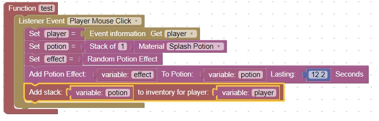
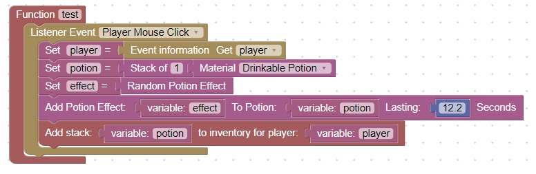
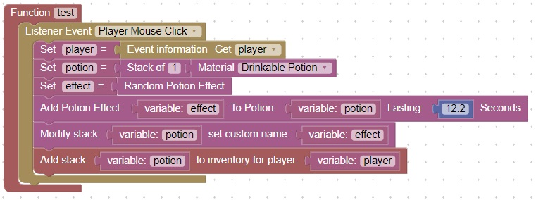
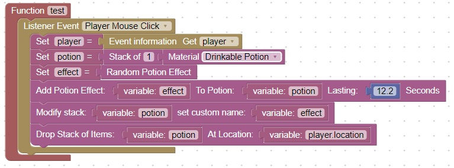
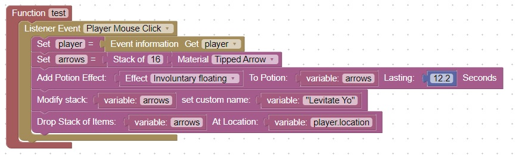
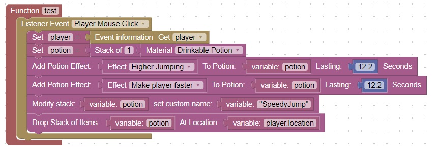

Potions
In this lesson we will learn:
- How to make a splash potion
- How to make a drinkable potion
- How to name the potion
- How to add the potion to a players inventory
- How to drop the potion on the ground
- How to enchant an arrow with the potion effect
- How to combine potion effects
Give a splash potion to player on mouse click
This first example will give a player a random potion when they click their mouse

Give a drinkable potion to player on mouse click
To make it a drinkable potion, just change "Splash Potion" to "Drinkable Potion":

Name the potion
It would be good to know what we are drinking, so lets give the potion a name:
We do this by adding a Modify stack set custom name block to the code right before adding it to the player's inventory

Drop the potion on the ground
Sometimes we will want to drop the potion rather than giving it to the player directly
To do this Chang the Add stack to inventory for player block to Drop Stack of Items at Location. For the location use: player.location

Enchant an arrow with the potion effect
You may also want to apply a potion effect to an arrow. To do this we will use a Tipped Arrow
To test this you will need to shoot a bunch of arrows straight up, eventually one will hit you

Combine potion effects
Rather than using the random potion effect you can add multiple effects together:

Homework
Create a potion that gives a player levitation but will not damage the player when it wears off. Hint: Combine more than 1 potion effect